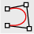
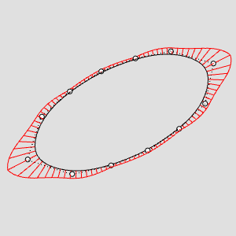
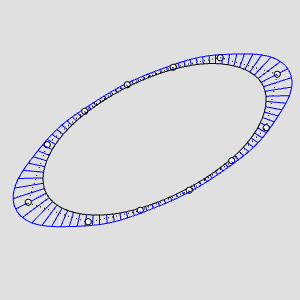
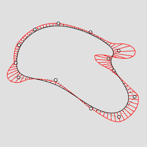
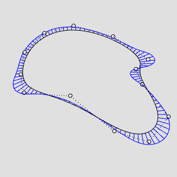
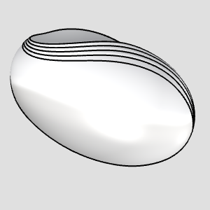
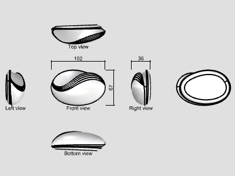
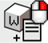

橙皮书
设计工具的克制与效率重构
PlusPlastic 自 2005 年起担任 Rhino 官方授权代理店与培训中心，长期为设计院校、工业界及建筑工作室提供软体供应、技术支持与培训课程。团队本身亦承接产品与建筑领域的实际设计课题——设计师既是重度建模者，又是技术讲师。为了高效应对大量实际项目中的高频痛点，团队在内部积累了丰富的脚本工具与自制命令。byRhino Gadget 即为这些高频生产力工具的公开编译集。
设计社群习惯将具备权威性与完整体系的工具书称为「橙皮书」。本书基于官方帮助文档的全部 93 个专题页面、472 幅高清操作图解与完整技术参数重新编译制作，全面覆盖 11 大功能领域与全部 116 条命令。每条命令均按「功能定义 → 操作步骤 → 参数选项 → 核心要点 → 图解范例」的标准化版式呈现，并在第十五章系统提炼出六大典型工程工作流。
本书旨在成为每一位 Rhino 高阶设计师案头的权威参考书。
- 01 第一章 · 插件概述 Overview & Background
- 02 第二章 · 设计理念与交互约定 Design Philosophy & Conventions
- 03 第三章 · 全局命令体系总览矩阵 Global Command Matrix
- 04 第四章 · 控制点编辑 (11 条命令) Point Edit Tools
- 05 第五章 · 曲线工具 (17 条命令) Curve Tools
- 06 第六章 · 曲面工具 (3 条命令) Surface Tools
- 07 第七章 · 实体建模 (5 条命令) Solid Modeling
- 08 第八章 · 标注与出图 (12 条命令) Annotation & Layout
- 09 第九章 · 文件与图层管理 (6 条命令) File & Layer Tools
- 10 第十章 · 空间变换 (14 条命令) Transform Tools
- 11 第十一章 · 建模与造型细节 (19 条命令) Modeling & Features
- 12 第十二章 · 视口显示与设置 (19 条命令) Display & Settings
- 13 第十三章 · 物理分析与测算 (8 条命令) Physical Analysis
- 14 第十四章 · 官方技术支持与帮助 (2 条命令) Help & Support
- 15 第十五章 · 六大典型高阶工作流 Typical Workflows
- A 附录 A · 核心术语与参数对照表 Glossary of Terms
- B 附录 B · 官方技术资源与生态 Resources & Ecosystem
- C 附录 C · 英文命令字母序（A–Z）全书检索索引 Alphabetical Index
第一章 · 插件概述
1.1 插件背景
byRhino Gadget(바이라이노 가젯) 是韩国 PlusPlastic(플러스플라스틱) 公司开发的 Rhinoceros 效率增强插件。
PlusPlastic 自 2005 年起担任 Rhino 官方授权代理店与培训中心,长期为韩国 Rhino 用户提供软件供应、技术支持与教学服务。同时,PlusPlastic 本身也是一家设计公司,承接产品、建筑等多个领域的设计课题——他们的设计师既是 Rhino 的重度使用者,又是负责技术支持的工程师和负责培训的讲师。
为了高效完成大量实际设计课题中的建模、可视化与沟通工作,团队在内部积累了大量 Rhino 脚本和基于 Grasshopper 的自制命令;同时通过技术支持、销售与培训,持续接触到各类用户提出的额外需求。byRhino Gadget 就是把这些内部脚本命令整理成册、公开发布的插件合集。
1.2 插件定位
byRhino Gadget 不试图替代 Rhino 原生命令,而是辅助它们:
- 减轻重复劳动:把需要对多个对象重复执行的操作 (延伸、布尔、阵列、导出等) 合并为一次批量执行;
- 化解琐碎麻烦:处理那些 " 每次都要做、但又很别扭 " 的小事 (改公差、改背景色、找圆心、贴符号等);
- 补齐工作流缺口:提供 Rhino 原生没有的概念 (重量估算、天光剪影、LookAt 广告牌、幻灯片视图切换、台阶挤出等)。
1.3 上手成本
插件的用户界面刻意与 Rhino 原生命令保持一致的操作方式。只要了解某个命令 " 做什么 ",Rhino 用户就可以直接使用它——不需要学习新的交互范式。
1.4 发行方
byRhino(바이라이노) 是 PlusPlastic 运营的设计软件专业商城,以 Rhinoceros 为设计平台,面向产品、建筑、珠宝、机械等设计师供应 3D 建模、渲染、数字制造软件及平面、办公软件等数字设计解决方案。
1.5 关于本书
" 橙皮书 " 是设计软件社群对完整版权威参考手册的俗称。本书基于官方帮助文档的 117 个页面完整编译,覆盖插件全部 11 大类、约 116 条命令,每条命令按 " 功能 → 步骤 → 选项 → 要点 " 的结构整理,并在第十五章提炼出六类典型工作流,便于按任务而非按菜单查找工具。
---
第二章 · 设计理念与交互约定
2.1 辅助而非替代
插件中绝大多数命令是对 Rhino 原生命令的批量化、增强化封装。例如:
ExtendMulti= 原生Extend的多曲线批处理版;UntrimAllP= 原生UntrimAll的多对象批处理版;BooleanUnionMulti= 原生BooleanUnion的逐对容错版;FlowMulti= 原生Flow的多目标曲线版。
理解这一点后,即使没读过某条命令的文档,也能从命名大致推断其行为。
2.2 命名规律
命令名普遍由 "动作 + 修饰语" 的英文缩合构成:
| 后缀/词根 | 含义 | 示例 |
|---|---|---|
Multi |
多对象批处理 | ExtendMulti、FlowMulti、BooleanUnionMulti |
2 |
两个对象之间 | CirclesAlong2Crvs、Copy2Pts、MinMaxDistance2Crvs |
Crv / Srf |
曲线 / 曲面 | SymmetricCrv、SymmetricSrf |
To |
对齐/吸附到某目标 | SetPtToCrv、PolylineToCrv、MoveToZPt |
By |
以某物为依据 | ArrowsByCrvs、SolidCutByCrv、OrientByFace |
mk |
make,生成某种造型 | mkButtons、mkEngrave、mkGraphics |
Sel |
选择 | SelRandom、SelSameDots、LookAtSelAll |
Obj |
对象 | ObjColor2MatColor、TransformObjects |
Weight / Density |
重量 / 密度 | WeightSolid、WeightDensity |
2.3 交互约定
- 多数命令遵循 Rhino 惯例:先运行命令 → 按提示选取对象 → 在命令行设置选项 → 完成;
- 命令行选项 (
Copy、Flip、nDigits、Type等) 与原生命令的选项风格一致; - 部分命令弹出选项面板/对话框(如
AddCallouts、TransformObjects、AlignPanel); nDigits是全插件通用的 " 小数位数 " 选项,如nDigits = 1表示 0.1 精度、nDigits = 2表示 0.01 精度;- 支持 Undo/Redo(如
AlignPanel明确支持)。
---
第三章 · 命令体系总览矩阵
插件命令按 11 个功能域组织。下表为每个域的完整命令清单与一句话功能 (供速查,详细用法见后续章节):
Point Edit 控制点编辑 (11 条)
| 命令 | 功能 |
|---|---|
ChangeDegreePtCrv |
保持曲线控制点位置不变,改变曲线阶数 |
ChangeDegreePtSrf |
保持曲面控制点位置不变,改变曲面阶数 |
ControlPoint2KinkCrv |
把曲线控制点转换为折点 (Kink) |
ControlPoint2KinkSrf |
按曲面控制点的一列创建折点并分割曲面 |
SetPtLinear |
以工作平面为基准,将控制点直线对齐 |
SetPtLinear3D |
将控制点对齐到一条三维直线 |
SetPtToCrv |
将控制点对齐到参考曲线上 |
SetPtToFitPlane |
将控制点落到它们的平均拟合平面上 |
SymmetricCrv |
将曲线控制点对称对齐 |
SymmetricSrf |
将曲面控制点对称对齐 |
SymmetricDiagonalSrf |
将曲面控制点沿 UV 对角方向对称对齐 |
Curve 曲线 (17 条)
| 命令 | 功能 |
|---|---|
CirclesAlong2Crvs |
沿两条曲线生成相互外切、且与两曲线相切的圆 |
ExtendMulti |
将多条曲线一次性延伸到边界对象 |
ExtractIsocurvesDivide |
按间距/距离/数量提取曲面等参曲线 |
Farthest2PtsInCrv |
找出一条曲线上相距最远的两点并连线 |
FilletCornerCutting |
以顶点为圆心画圆,对曲线拐角做圆角切割 |
FitCrvLength |
保持端点不动,把曲线变形到指定长度 |
FlowMulti |
对多条目标曲线批量执行 Flow |
FullRoundCrv |
对三段多段线的两端做全圆角 (Full Round) |
 PolylineSplit2Crvs |
在尽量保持多段线形状的前提下转换为曲线 |
PolylineToCrv |
利用多段线的顶点生成平滑曲线 |
RevCloudsBySketch |
以手绘方式画云线 (修订符号) |
RebuildCrvCountByLength |
按控制点数量或间距长度重建曲线 |
RoundedRectangle |
绘制两端为全圆角 (胶囊形) 的矩形 |
CastVectorShadow |
生成对象在指定方向下的矢量阴影轮廓线 |
Match2CurveEndsByRotate |
旋转两条曲线使其最近的端点相接 |
FilletSmooth |
在两曲线间绘制 G2 以上连续的圆角曲线 |
LineNormalToMesh |
沿网格法线方向绘制直线 |
Surface 曲面 (3 条)
| 命令 | 功能 |
|---|---|
SphereDeformable |
生成可编辑控制点的旋转成型球面 |
UntrimAllP |
对多个对象批量执行 UntrimAll |
ExtendSrf4Sides |
以曲面边缘为基准向四个方向延伸 |
Solid 实体 (5 条)
| 命令 | 功能 |
|---|---|
BooleanDifferenceMulti |
逐个执行差集,失败的对象保留不删 |
BooleanUnionMulti |
逐个执行并集,失败的对象保留不删 |
BooleanUnionSubSrfs |
以多重曲面的子曲面为基准执行并集 |
ExtendExtrusions |
把挤出体延伸到边界对象 |
SolidCutByCrv |
用闭合曲线剪切实体 |
Annotation 标注与出图 (12 条)
| 命令 | 功能 |
|---|---|
AddCallouts |
为对象生成序号引出标注并可生成明细表 |
CircleCenterPoints |
输出圆的圆心坐标与半径/直径 |
DimBoundingBox |
生成包围盒并标注 X、Y、Z 尺寸 |
DotZ |
用点标注 (Dot) 显示指定位置的 Z 值 (高度) |
DotSerial |
生成连续编号的点标注 |
LengthCrvs |
显示所有选中曲线的长度 |
Merge2LinearDimensions |
把两条直线尺寸合并为一条 |
MinMaxDistance2Crvs |
显示两曲线间的最长、最短距离 |
ThirdAngleLayout |
按第三角法布置对象的三视图并标注尺寸 |
AddLayouts |
按所选图框批量添加布局页面 |
LayoutSameScale |
添加四视图等比例布局 |
TextSymbols |
把 Unicode 特殊符号复制到剪贴板 |
File 文件管理 (6 条)
| 命令 | 功能 |
|---|---|
ExportEachLayer |
按图层分别导出文件 |
ImportFilesinFolder |
导入指定文件夹内的全部文件 |
ExplodeBlockInSameLayer |
炸开块,对象保留在其当前所属图层 |
MergeLayers |
把多个图层合并为一个 |
PrintTextContents |
一次性查看 TEXT/DOT/DIM 内容并复制导出 |
WorksessionMerge |
把工作会话中的多个文件合并为一个文件 |
Transform 变换 (14 条)
| 命令 | 功能 |
|---|---|
AlignPanel |
打开按 XYZ 轴对齐/分布的浮动面板 |
AlignPanelOff |
关闭对齐面板 |
Copy2Pts |
以基准点为参照,把对象批量复制到多个点 |
MoveToZLevel |
以 (上/中/下) 基准把对象移动到输入的 Z 高度 |
MoveToZPt |
以 (上/中/下) 基准把对象移动到拾取点的高度 |
OrientByFace |
把对象从基准曲面对齐移动到目标曲面 |
OrientByFlatFaceToXY |
把带平面的构件对齐到 XY 平面 |
Rotate3DIntersect |
以两条旋转轴的交点为基准做三维旋转 |
SplitPlanar |
用最多三点的平面切分对象 |
SubLayersByGroup |
按群组为对象生成子图层 |
TransformObjects |
高容量网格数据的移动/旋转/镜像/剖切工具 |
TrimBox |
用一个可实时编辑的盒子裁切显示对象 |
UnrollCrv |
绘制与曲线等长的直线 (曲线展开) |
Randomize |
对多个对象做随机移动、旋转、缩放与变色 |
Modeling 建模 (19 条)
| 命令 | 功能 |
|---|---|
ArrowsByCrvs |
由曲线生成多种样式的箭头几何体 |
LawnGrassMesh |
生成渲染用的草坪网格 |
LookAt |
使插入的 LookAt 块对象朝向相机 |
LookAtInsert |
在指定位置插入 LookAt 块对象 |
LookAtLoadDefault |
载入内置的默认 LookAt 块 (人形剪影等) |
LookAtParallel |
使 LookAt 对象无透视地平行朝向相机 |
LookAtProjectZ |
把 LookAt 块对象对齐放置到指定对象表面 |
LookAtSel |
选取与所选 LookAt 对象相同的全部对象 |
LookAtSelAll |
选取全部 LookAt 对象 |
LookAtSelName |
按名称选取 LookAt 对象 |
LookAtSetBlock |
把所选对象注册为 LookAt 块 |
mkButtons |
按闭合曲线在曲面上生成按钮造型 |
mkButtonsDome |
按闭合曲线在曲面上生成圆顶按钮 |
mkEngrave |
把闭合曲线投影到曲面生成阴刻/阳刻凸起 |
mkGraphics |
把闭合曲线投影并偏移,生成贴附曲面的图形曲面 |
StepExtrude |
按等高曲线生成阶梯状挤出造型 |
PipeSmooth |
生成直径渐变、截面平滑过渡的管 |
ExtractJoinedRenderMeshByGroup |
按群组提取并合并渲染网格 |
Display, Settings 显示与设置 (19 条)
| 命令 | 功能 |
|---|---|
SetAbsoluteTolerance |
快速修改绝对公差 |
BackGroundColor |
更改视图背景色 |
BackGroundColorDefault |
恢复默认视图背景色 |
ClippingPlaneNormal |
沿曲面法线方向创建剖切平面 |
GradientObjectColor |
给对象赋予两色渐变的显示颜色 |
SlideForward / SlideBackward |
按名称顺序正向/反向切换命名视图 |
SlideCurrent |
恢复到当前命名视图保存的视角 |
ObjColor2MatColor |
按显示颜色创建并赋予材质 |
ObjColorAsMatColor |
把材质颜色应用为显示颜色 |
SyncDisplayModes |
把所有视图的显示模式统一为当前视图 |
LayerOnByObject |
仅保留所选对象所在图层,其余关闭 |
ExplodedView |
批量移动对象制作爆炸图 |
SelRandom |
按比例或数量随机选取对象 |
FullscreenNoTitleMax |
无视图标题的全屏模式 |
ObjectColor |
更改对象显示颜色 (支持宏调用) |
ObjectColorFromLayer |
把对象颜色改回图层颜色 |
RandomizeLayersMaterialColor |
随机设置图层材质颜色或改用显示色 |
SelSameDots |
查找与所选 Dot 内容相同的 Dot |
SelDotsByContent |
按内容 (精确/包含) 查找 Dot |
Analyze 分析 (8 条)
| 命令 | 功能 |
|---|---|
CountObjects |
按名称/图层/材质统计对象数量 |
DistaceBetween2Faces |
显示两平面间的距离 (原文如此拼写) |
DistancePt2Objs |
测量基准点到曲面的距离 |
VolumeOverlapped |
不做布尔并集,近似计算重叠部分体积 |
WeightSolid |
按材质密度计算实体重量 |
WeightOverlapped |
不做布尔并集,近似计算多个重叠对象的总重 |
WeightDensity |
编辑并保存材质密度库 |
SetDensity |
为对象附加材质/密度信息供明细表使用 |
Help 帮助 (2 条)
| 命令 | 功能 |
|---|---|
byRhinoGadgetHelp |
打开插件帮助页面 |
byRhinoHome |
打开 byRhino 官网 |
---
第四章 · 控制点编辑
本章命令作用于曲线/曲面的控制点,是曲面造型 (尤其高阶连续性调整) 的核心工具组。除 SetPt* 系列需先打开控制点外,多数命令直接对对象整体操作。
在保持曲线控制点位置不变的前提下,改变曲线的阶数 (Degree)。
- 运行
ChangeDegreePtCrv; - 选取目标曲线;
- 输入要更改的阶数。
- 节点 (Knot) 处的连续性随阶数改变:Degree=2 的曲线在节点处为 G1(相切) 连续,Degree=3 为 G2 连续。可用
CurvatureGraph检查曲率分布。 - 典型用法:先用低阶 (如 3 阶) 曲线快速拉出形状,再用本命令升到 4、5、6 阶——形状基本不变,但获得更高的连续性。
- 结果是控制点位置相同、节点均匀 (Uniform)的曲线,因此形状会有差异。若想在形状完全不变的前提下升阶,请使用 Rhino 原生
ChangeDegree命令。




在保持曲面控制点位置不变的前提下,分别改变曲面的 U、V 阶数。
- 运行
ChangeDegreePtSrf; - 选取目标曲面;
- 输入新的 U 阶数;
- 输入新的 V 阶数。
- 与曲线版同理:先低阶快速造型,再升高阶获得高连续性;可用
CurvatureGraph、CurvatureAnalysis、Zebra检查。 - 结果为 Uniform 曲面,形状会变;要形状不变请用原生
ChangeDegree。


把曲线的某个控制点直接转换为折点 (Kink,尖角)。
- 运行
ControlPoint2KinkCrv; - 选取目标曲线;
- 选取要转换为折点的控制点。
- 想在曲线上做出 " 硬边 " 造型时,无需重新建模,直接把控制点变成 Kink 即可。
- 转换后曲线的阶数随剩余控制点数量而变化。
- 注意:若对象处于多重历史 (History) 链中,转换可能打断历史。例如:曲线经
ExtrudeCrv生成曲面、又对该曲面做过FlowAlongSrf——给曲线加 Kink 后ExtrudeCrv的结果会变成多重曲面,FlowAlongSrf将失效。


选取曲面控制点的一列,将其转换为折点。
- 运行
ControlPoint2KinkSrf; - 选取目标曲面;
- 选取要转换的控制点;
- 在命令行选项中选择 U 或 V 方向后确认。
- 曲面会沿折点行被分割,子曲面之间产生真实边缘。
- 分割后两块曲面的阶数由各自控制点数决定。


以工作平面 (CPlane) 为基准,把选中的控制点排成直线。
- 打开曲面的控制点 (
PointsOn); - 运行
SetPtLinear; - 选取要对齐的控制点;
- 输入直线的两个基准点。
- 与原生
SetPt不同,本命令可以自定义对齐方向,因此斜线方向的对齐也很容易。 - 控制点在工作平面方向上的高度得以保留 (仅在平面内移动)。


把控制点真正对齐到三维空间中的一条直线上。
- 打开曲面的控制点;
- 运行
SetPtLinear3D; - 选取要对齐的控制点;
- 输入直线的两个基准点。
- 适合把特定控制点做 G1(相切) 对齐,或把控制点整理成真正的直线形态 (不受当前工作平面约束)。


把控制点对齐到参考曲线上。
- 打开曲面的控制点;
- 运行
SetPtToCrv; - 选取要对齐的控制点;
- 选取基准曲线,完成对齐。
Planar选项:不使用时,控制点完全落到三维曲线上;设为Yes时,控制点只在当前视图工作平面内移动、保持原有构图平面高度。- 需要把三维控制点按某一特定视图的形状整理时,使用
Planar选项。


把所选控制点放置到它们的平均拟合平面上。
- 打开曲面的控制点;
- 运行
SetPtToFitPlane; - 选取想压平的控制点。
- 适合把曲面局部区域 " 抹平 ",或把旋转成型曲面极点附近的控制点整理到同一平面。
- 若只是想把控制点沿工作平面的某方向排布 (而非压平),请用
SetPtLinear。


把曲线的控制点排成对称。
- 运行
SymmetricCrv; - 选取目标曲线;
- 输入两点确定对称轴;
- 选择对称方向。
- 用于 " 对称造型但不想在中轴处断开、要保持一条完整曲线 " 的场景。
- 控制点数为奇数时,中心控制点恰好落在对称轴上。
- 周期 (Periodic) 曲线:请先把接缝 (Seam) 转到中轴附近再执行。


把曲面的控制点排成对称。
- 运行
SymmetricSrf; - 选取目标曲面;
- 输入两点确定对称轴;
- 选择对称方向。
- 用于 " 对称造型但不在中轴处分缝、保持单一曲面 " 的场景。
- 奇数控制点时中心控制点落在轴上;周期曲面先把 Seam 转到中轴附近再执行。


把曲面的控制点沿 UV 对角方向排成对称。
- 运行
SymmetricDiagonalSrf; - 选取目标曲面;
- 选择对称基准方向;
- 沿斜线输入两点确定对齐。
- 前提:曲面 U、V 方向的控制点数量必须相同。
- 对称方向以 UV 平面的原点为基准设定;若方向不对,先用原生
Dir命令翻转 U 或 V 方向再执行。 - 封闭曲面 (球) 不适用。
- --


第五章 · 曲线工具
沿两条曲线生成一串圆——每个圆与两条曲线相切,且相邻圆彼此相切。
- 运行
CirclesAlong2Crvs; - 按顺序选取两条曲线。
- 两条曲线必须同为开放或同为闭合。
- 从第一条所选曲线的起点开始、沿曲线方向依次生成圆。
- 闭合曲线时,首圆与末圆不会重叠或相交。


把多条曲线一次性延伸到指定的边界对象。
- 运行
ExtendMulti; - 设置选项;
- 选取边界对象 (可多选);
- 选取要延伸的曲线 (可多选)。
- 曲线、直线不限;边界对象无论曲线、曲面、实体均可。
- 一次命令即可对所有选中曲线执行延伸。
- 只有当边界对象位于曲线的行进方向上时才会延伸。


按间距、距离或数量,从曲面提取等参曲线 (Isocurve)。
- 运行
ExtractIsocurvesDivide; - 设置选项;
- 选取目标曲面。


找出一条曲线上彼此距离最远的两个点,并生成连接两点的曲线。
- 运行
Farthest2PtsInCrv; - 选取目标曲线 (可多选)。


以曲线拐角顶点为圆心、按设定半径画圆,再用圆完成拐角切割。
- 运行
FilletCornerCutting; - 设定半径;
- 选取构成拐角的两条曲线 (若已结合/join,则选取角点两侧)。


保持曲线两个端点不动,把曲线变形到收敛于指定长度。
- 准备曲线;
- 运行
FitCrvLength; - 输入目标长度值。
- 典型场景:2D 版型、服装版型等展开图中,精确编辑曲线段的长度。
- 命令行提示
Target curve length (Distance between ends is *)中的数值是可缩减的最小长度**(即两端点间距);若把目标长度设得更小,曲线会退化为 1 阶 (直线) 曲线。


对多条目标曲线重复执行原生 Flow(沿线流动)。
- 运行
FlowMulti; - 选取要做 Flow 的对象;
- 选取基准曲线;
- 设置选项;
- 选取多条目标曲线后应用。


对具有三个分段 (Segment) 的多段线两端做全圆角 (Full Round,半圆头)。
- 运行
FullRoundCrv; - 选取目标曲线。


把多段线转换为曲线,同时尽量保持原形状。
- 运行
PolylineSplit2Crvs; - 选取目标曲线;
- 设置选项后确认。


利用多段线的顶点生成平滑曲线。
- 运行
PolylineToCrv; - 选取目标曲线;
- 输入顶点忽略距离 (Skip vertex distance)。
- 忽略距离越大,生成曲线的控制点越少、曲线越平滑。
- 文档示例:忽略距离 30 与忽略距离 1000 的对比效果差异明显。
用手绘 (Sketch) 方式圈画区域,自动生成云朵形修订云线 (Revision Cloud)。
- 运行
RevCloudsBySketch; - 输入云齿间距;
- 圈画区域生成曲线 (顺时针与逆时针方向决定云齿朝向)。


按控制点数量或控制点间距为基准重建曲线。
- 运行
RebuildCrvCountByLength; - 选取目标曲线;
- 设置选项后确认。
- 逆向工程利器:把投影到网格上的多段线重建为间距均匀、阶数可控的曲线。
- 复杂曲线无需先 Split 再 Rebuild,即可在保形前提下有效精简控制点。


绘制两端为全圆角 (半圆,即 " 跑道形/胶囊形 ") 的矩形曲线。
- 指定第一个基准点;
- 指定第二个基准点;
- 指定 (端部) 圆的直径。


生成对象在指定光照方向下的阴影轮廓曲线(矢量阴影)。
- 运行
CastVectorShadow; - 选取要投影阴影的对象;
- 选取承接阴影的对象 (若使用该对象最低点的 XY 平面,直接回车);
- 用两点指定光线角度;
- 自动执行 Hatch(填充)。
- 调整方向线即可控制阴影轮廓的位置。
- 实体对象会自动执行
Hatch命令生成填充——适合出矢量风格的效果图、轴测图。


旋转两条曲线,使二者相距最近的端点彼此贴合。
- 运行
Match2CurveEndsByRotate; - 选取目标曲线。


在两条曲线之间绘制具有 G2 以上曲率连续的 " 圆角状 " 曲线。
- 运行
FilletSmooth; - 按顺序选取两条曲线。
- 生成 G2 以上连续连接的圆角曲线——比原生
Fillet(G1) 更顺滑,适合外观面、手板的高光过渡。 - 直线、曲线均可自由组合;两端都是曲线时,结果质量可能不如直线组合。
沿网格 (Mesh) 表面指定点的法线方向,绘制指定长度的直线。
- 运行
LineNormalToMesh; - 选取网格;
- 在网格上指定位置,按设定长度生成直线。
- ---
第六章 · 曲面工具
生成控制点可编辑的旋转成型 (Revolved) 球面——即 " 可揉捏的球 "。
- 运行
SphereDeformable; - 设置 U、V 方向阶数;
- 指定球心;
- 输入直径,或用基准点方式创建球。
- 最低阶数为 6。
- 支持原生
Sphere的定位方式:2Point、3Point、Tangent、AroundCurve、4Point、FitPoints。 - 与 " 先建球再 Rebuild" 相比,其控制点天然对称排布(普通 Rebuild 会产生不对称点),更适合有机曲面造型起点。


对多个对象批量执行原生 UntrimAll(取消全部修剪)。
- 运行
UntrimAllP; - 多选目标曲面;
- 设置是否删除修剪曲线,确认完成。


以曲面边缘为基准,向四个方向等长延伸。
- 运行
ExtendSrf4Sides; - 选取要延伸的曲面。
第七章 · 实体建模
对多个对象逐个执行差集 (Difference) 运算,运算失败的对象保留不删。
- 运行
BooleanDifferenceMulti; - 选取要被差集的对象 (曲面/多重曲面);
- 多选执行差集的工具对象。
- 批量中个别对象布尔失败时,会自动跳过失败者完成其余运算。
- 布尔对象数量很多时,是排查失败对象的利器。


对多个对象逐个执行并集 (Union) 运算,失败的对象保留。


以多重曲面的特定子曲面为基准执行并集,无需先炸开对象。
- 运行
BooleanUnionSubSrfs; - 选取要被并集进去的子曲面 (可多选);
- 选取执行并集的对象 (可多选)。


把多个挤出 (Extrusion) 对象延伸到指定的边界对象。
- 运行
ExtendExtrusions; - 选取作为边界的对象;
- 选取要延伸的实体 (可多选)。
- 边界对象不能是点、曲线、网格,其余类型均可。


用闭合曲线剪切实体。
- 运行
SolidCutByCrv; - 选取作为边界的曲线;
- 选取要剪切的对象。
- 选项(
Direction): - -
Difference— 删除曲线内侧的部分; - -
Intersection— 删除曲线外侧的部分 (文档原文作 Intersectiom,按 Intersection 理解); - -
Split— 按曲线分离对象。
- 边界曲线可以是闭合曲线;若为开放曲线,其两端点必须横跨被切对象。
- 边界曲线与被切对象均可多选。
- --


第八章 · 标注与出图
为对象生成带序号的引出标注 (Callout),并可同时生成明细表 (Table)。
- 运行
AddCallouts; - 选取目标对象;
- 在选项面板中设置后确认。
- 表格的图层名、材质、颜色、密度、重量、备注等列可按需增删。
- 支持在视图窗口与布局 (Layout) 页面中使用;布局模式下先选择 Detail 视图,即可选取其中的模型对象。
- 与
SetDensity、WeightDensity、RandomizeLayersMaterialColor联动可自动带出材质、密度、重量信息;配合ExplodedView可制作爆炸图 + BOM 表达。
输出圆的圆心坐标 (x, y, z) 与半径/直径。
- 运行
CircleCenterPoints; - 选取圆 (可多选);
- 指定显示的小数位数。
- 命令先给圆随机编号,再逐一输出圆心坐标与半径。
- 输出的数值可直接复制,粘贴到 Excel 会自动按单元格分列。


按对象形状生成包围盒 (Bounding Box),并标注其 X、Y、Z 尺寸。
- 运行
DimBoundingBox; - 设置选项;
- 选取目标对象。


用点标注 (Dot) 显示任意位置的 Z 值 (高度)。
- 运行
DotZ; - 设置小数位数;
- 拾取要标注高度的点。

生成按顺序编号的点标注。
- 运行
DotSerial; - 输入编号前缀 (可不输);
- 在需要的位置依次放置 Dot。
- 有前缀时显示为 " 前缀 + 数字 ",无前缀时只显示数字。
- 编号自动接续文档中已有的编号继续。


一次性显示所有选中曲线的长度。
- 运行
LengthCrvs; - 设置选项;
- 选取曲线。


把两条直线尺寸标注合并为一条。
- 运行
Merge2LinearDimensions; - 按顺序选取要合并的尺寸。
- 两条尺寸即使标注高度不同,只要在同一直线方向上即可合并。
- 两尺寸之间间隔再宽也可执行,结果为以两条尺寸最外端点为界的单一尺寸。


显示两条曲线之间的最长与最短距离。
- 运行
MinMaxDistance2Crvs; - 选取两条曲线。


以工作平面为基准,把对象按第三角法三视图布置,并生成尺寸标注。
- 运行
ThirdAngleLayout; - 设置选项;
- 选取目标对象。


按所选图框一次性添加多个布局页面。
- 运行
AddLayouts; - 选取要加入布局的图框 (图面框架);
- 选择布局尺寸。
- 会在视图底部按所选对象自动生成对应的图层页签。
- 多张图纸一次性输出 PDF 时非常方便。
- 生成后可用原生
Layouts命令管理这些页面。 - 大幅面图纸或多页打印输出时,可把图纸切分为可打印尺寸 (A4/A3) 并归入各图层。


添加一个四视图 (Top/Perspective 等) 布局,且四个视图比例一致。
- 运行
LayoutSameScale; - 设置布局尺寸;
- 设置详图视图数量 (Initial Detail Count) 后确认。
- 原生
Layout生成的四视图各自比例不同,本命令强制四视图等比——适合直接出图。 - 新布局窗口中对象以线框 (曲线) 方式显示。


把 Unicode 特殊符号复制到剪贴板,供文字输入使用。
- 运行
TextSymbols; - 点击要用的符号按钮 (复制到剪贴板);
- 在
Text等文字命令中 Ctrl+V 粘贴。
- 点击
Edit symbol file按钮可用记事本编辑符号表:删除不用的符号、调整常用符号顺序、追加新符号。 - 新符号可参考 https://unicode.org/charts。
- --
第九章 · 文件与图层管理
按图层为单位,把对象自动导出为指定格式的文件。
- 运行
ExportEachLayer; - 选择导出格式 (扩展名);
- 选择保存位置;
- 选择要导出的图层;
- 输入名称并确认。


把指定文件夹内的所有文件自动导入当前文档。
- 运行
ImportFilesinFolder; - 选择要导入的文件夹;
- 设置选项后确认。


炸开块实例 (Block Instance) 时,让对象保留在当前所归属的图层,而不是回到块定义时的图层。
- 运行
ExplodeBlockInSameLayer; - 选取块对象。
把多个图层合并为一个图层。
- 运行
MergeLayers; - 选取图层后确认;
- 选择合并目标图层,或创建新图层。
一次性查看文档中所有 TEXT、DOT、DIM 的内容,并支持复制与导出。
- 运行
PrintTextContents; - 在面板中操作。
把工作会话 (Worksession) 中挂接的多个工作文件合并为一个文件。
- 在
Worksession中挂接工作文件; - 运行
WorksessionMerge。 - ---
第十章 · 空间变换
AlignPanel 打开一个浮动面板,按 X/Y/Z 轴对选中对象执行对齐 (Align) 与分布 (Distribute);AlignPanelOff 关闭该面板。
- 运行
AlignPanel; - 选取目标对象;
- 点击面板上的图标执行对应操作。
以对象上的基准点为参照,把对象复制到逐个拾取的多个目标点。
- 运行
Copy2Pts; - 选取要复制的对象;
- 在对象上拾取基准点;
- 依次拾取各复制目标点。


以对象的上/中/下三等分基准,把对象移动到指定高度。MoveToZLevel 通过键盘输入 Z 数值;MoveToZPt 通过拾取点确定目标高度。 步骤(MoveToZLevel): 1. 运行 MoveToZLevel; 2. 选取对象; 3. 在命令行选项中选择 Top / Middle / Bottom; 4. 输入 Z 值。 步骤(MoveToZPt):同上,第 4 步改为拾取目标高度参照点。


把对象从基准曲面移动对齐到目标曲面(以两者中心对位)。
- 运行
OrientByFace; - 选取要移动的对象;
- 选取该对象上作为基准的面;
- 设置选项;
- 选取目标曲面。
- 支持挤出体 (Extrusion)、多重曲面、曲面。
- 圆柱与圆按 UV 中心点对位。


把具有平面的构件 (如建筑部件) 对齐到 XY 平面。
- 运行
OrientByFlatFaceToXY; - 选取对象;
- 设置选项。
以两条旋转轴的交点为基准,对对象做三维旋转。
- 运行
Rotate3DIntersect; - 选取第一个旋转对象;
- 拾取两点定义旋转轴,再拾取旋转后将要相交的交点;
- 选取第二个旋转对象;
- 同样定义轴与交点;
- 选择以交点 A 或 B 为准完成旋转。


用指定方向的平面切分所选对象。
- 运行
SplitPlanar; - 选取要切分的对象;
- 指定切分平面的起点与终点 (最多可用三点)。
- 块 (Block) 对象被切分时自动转为多重曲面;
- 被切分的实体仍保持为实体;
- 切分后对象属性 (图层、颜色等) 全部保留。


按群组 (Group) 为单位,把选中对象归入新建的子图层。
- 先以图层划分标准给对象分组;
- 运行
SubLayersByGroup; - 选取要生成图层的对象群组。
- 子图层创建在当前选中图层之下;
- 嵌套群组以最顶层群组为准,一个群组对应一个子图层。
- 渲染前 " 按材质分组 → 生成子图层 " 是推荐工作流 (见 15.3)。


以面板方式对高容量网格数据 (如扫描点云/大网格) 执行移动、旋转、镜像与剖切查看。
- 运行
TransformObjects; - 选取要变换的对象;
- 在面板中按 Move / Rotate / Mirror / Clipping 操作。


只显示盒子内部的对象;盒子被移动、编辑时,裁切区域实时更新。
- 运行
TrimBox; - 选取目标对象;
- 指定要裁切显示的盒子区域;
- 选择保留或删除原对象。


把曲线展开,绘制与其等长的直线。
- 运行
UnrollCrv; - 选取目标曲线。


对多个对象做随机移动、旋转、缩放,或随机改色。
- 运行
Randomize; - 设置选项后确认。
- 让批量摆放的对象 " 自然不死板 " 地抖动一点,是它的招牌用法。
- 也用于随机扰动曲面/曲线控制点、网格顶点,制造有机噪声。
- --


第十一章 · 建模与造型细节
由曲线生成多种样式的箭头几何体。
- 先创建箭头要沿着的曲线;
- 运行
ArrowsByCrvs并选取曲线; - 选择选项后应用。


生成渲染用的草坪 (草叶) 网格对象。
- 准备:一片曲面 (草要附着的表面)+ 一条定义范围的闭合曲线;
- 运行
LawnGrassMesh,选取范围曲线; - 选取附着曲面;
- 设置角度、大小等选项后生成。
- 输出为单一网格,数据量友好;
- 配合平面贴图 (Planar mapping) 上材质效果好。


| 命令 | 功能 |
|---|---|
LookAt |
使所有已插入的 LookAt 块朝向相机 (带透视) |
LookAtInsert |
在指定位置插入 LookAt 块 |
LookAtLoadDefault |
载入内置默认 LookAt 块 (Man1~4、Woman1~3 人形) |
LookAtParallel |
使 LookAt 对象无透视地平行朝向相机 |
LookAtProjectZ |
把 LookAt 块放置/对齐到指定对象表面 |
LookAtSel |
选取与所选 LookAt 相同的全部对象 |
LookAtSelAll |
选取全部 LookAt 对象 |
LookAtSelName |
按名称选取 LookAt 对象 |
LookAtSetBlock |
把所选对象注册为 LookAt 块 |
- 生成的 LookAt 对象可双击批量编辑;
- 注册自定义块时,建议用带 Alpha 通道的图片 (Picture 导入)——剪影效果最好。


| 命令 | 输出 |
|---|---|
mkButtons |
沿曲线形状贴着曲面凸起的 " 按钮 " |
mkButtonsDome |
同上,但按钮顶面为圆顶 (Dome) |
mkEngrave |
把曲线投影到曲面,生成阴刻/阳刻凸起 (刻印、logo) |
mkGraphics |
把曲线投影并复制偏移,生成与基础曲面隔开一段距离的 " 贴附图形曲面 "(印刷/丝印效果) |


指定最低点后,以等高线为基准,生成逐级升高的阶梯状挤出造型。
- 运行
StepExtrude; - 选取最外侧的边界曲线;
- 选取等高线曲线 (可多选);
- 设置选项;
- 选取作为最底面的曲面 (可多选)。


沿曲线生成直径可变、截面平滑过渡的管。
- 运行
PipeSmooth; - 选取目标曲线;
- 在曲线上 (多点) 设定直径 (可多选点);
- 选择管端是否保持切线连续。


按群组提取各对象的渲染网格 (Render Mesh) 并合并,形成渲染友好的网格结构。
- 先按材质把对象分成群组;
- 运行
ExtractJoinedRenderMeshByGroup; - 选取目标对象。
- 解决 " 对象数量过多拖慢渲染 " 的问题:按组合并后网格数大幅下降。
- 只需做好分组,即可完成渲染前的数据整理。
- --


第十二章 · 视口显示与环境设置
快速修改文档的绝对公差 (Absolute Tolerance,即 Rhino Options → Units 中的值)。
- 运行
SetAbsoluteTolerance; - 在命令行输入新的公差值。
- 公差显著影响
FlowAlongSrf等命令的结果:降低公差执行,速度更快、结果更简洁。 - 在保持 Curvature 以上连续性的前提下,低公差生成的对象仍可 Join;而且要移动的点更少,后续点编辑更轻。

BackGroundColor 修改视图背景颜色;BackGroundColorDefault 恢复默认色。
- 若显示设置里背景被固定为 " 单色 (Solid Color)" 等模式,命令无法生效——需把背景设为 " 使用应用程序设置 (Use Application Setting)"。


沿所选曲面的法线方向创建剖切平面。
- 运行
ClippingPlaneNormal; - 选取目标对象的一个曲面;
- 在曲面上指定剖切面中心点;
- 指定第二个参照点 (决定剖切面大小);
- 点击指定角度。


给一组对象赋予两种颜色之间的渐变显示色。
- 运行
GradientObjectColor; - 选取渐变的两个端点颜色;
- 框选目标对象。


按命名视图 (Named View) 的名称顺序,正向/反向逐个切换视角;SlideCurrent 在视角被改动后恢复到当前命名视图的存档视角。
- 先在 Named View 面板保存好各视图;
- 运行
SlideForward(下一张) 或SlideBackward(上一张); SlideCurrent— 直接恢复当前命名视图。- 选项(Named View Animation Settings):
- -
Animate named view restoration— 恢复视图时是否播放动画; - -
Constant time— 等时模式 (帧数↑速度↓); - -
Constant speed— 等速模式 (每帧单位距离↑速度↑); - -
Delay between frames— 帧间延迟 (毫秒↑速度↓)。


- ObjColor2MatColor:按对象显示色创建同色材质并赋予;若显示色来源是图层,则为该图层创建材质。材质类型为 Custom,名称为 RGB 值 (如 000,000,000)。 - ObjColorAsMatColor:反向——把材质颜色应用为显示颜色。
把所有视图的显示模式统一为当前所选视图的模式。
- 先把某个视图调成想要的显示模式并点选该视图;
- 运行
SyncDisplayModes。


仅保留所选对象所在图层开启,其余图层全部关闭 (隔离显示)。
- 运行
LayerOnByObject; - 选取目标对象。


同时移动多个对象,制作分解视图 (爆炸图)。
- 运行
ExplodedView; - 选取目标对象;
- 设置选项后确认。


按比例或数量随机选取对象。
- 运行
SelRandom; - 选取目标对象;
- 设置选项后确认。


进入全屏,且视图不显示标题文字 (比原生 Fullscreen 更干净)。
- ObjectColor:更改对象显示颜色; - ObjectColorFromLayer:把对象颜色改回其图层颜色 (右键附加白色/黑色快速选项)。 宏用法(ObjectColor 可写进工具栏按钮): - 颜色名 (中/英文,含空格需删空格或加引号): - ObjectColor Pause 빨강 / ObjectColor Pause Red - ObjectColor Pause "연한 회색" / ObjectColor Pause 연한회색 - RGB 值 (逗号分隔,含空格需引号): - ObjectColor Pause 255,0,0 / ObjectColor Pause "255, 0, 0"
随机设置各图层的材质颜色,或把图层材质色改为该图层的显示颜色。
- SelSameDots:选取一个 Dot,找出所有内容与其完全相同的 Dot; - SelDotsByContent:输入文字,查找内容相似或精确匹配的 Dot。 SelDotsByContent 选项: - Match case — 区分大小写; - Include — 不区分大小写地匹配 " 包含该文字 " 的 Dot。
- --
第十三章 · 物理分析与测算
按对象名称、图层、材质统计数量。
- 运行
CountObjects; - 设置选项;
- 选取目标对象 (选择
DrawTable或GridView输出)。


显示两个面 (平面) 之间的距离。
- 运行
DistaceBetween2Faces(命令名原文如此拼写); - 依次选取两个曲面。


测量基准点到曲面的距离。
- 运行
DistancePt2Objs; - 拾取第一个基准点;
- 应用选项;
- 选取要测距的曲面。
不做布尔并集,直接近似计算多个互相重叠对象的总体积——专治 " 布尔算不动 " 的对象。
- 运行
VolumeOverlapped; - 选取互相重叠的对象;
- 设置采样间隔 (확인 간격);
- 命令行选
Yes确认。
- 原理:按对象截面面积积分计算体积;
- 采样间隔越小,近似值越精确 (耗时也越长);
- 支持 Brep、Mesh、SubD 对象。


按所选材质的密度,计算实体对象的重量。
- 运行
WeightSolid; - 选取目标对象;
- 选择密度 (材质) 后确认。
- 材质来自
WeightDensity维护的密度库 (默认值 + 自定义); - 支持 SubD 对象。



SetDensity不做布尔并集,近似计算多个重叠对象 (按并集口径) 的合计重量。
- 运行
WeightOverlapped; - 选取目标对象;
- 设置密度 (材质);
- 输入采样间隔;
- 命令行确认。


编辑并保存各材质的密度值 (比重)。
- 运行
WeightDensity; - 添加材质并设置其密度值。
- 建立材质 (密度) 库后,
WeightSolid/WeightOverlapped的密度选择直接从库中读取; - 支持搜索、整理、批量删除多个密度条目。


为对象附加 " 材质/密度/重量 " 信息,供 AddCallouts 的明细表 (Table) 调用。
- 运行
SetDensity; - 从列表选择材质;
- 选取对象后应用。
- ---
第十四章 · 官方技术支持与帮助
打开插件帮助页面。同时提供:byRhino 官网、PlusPlastic 博客 (라이노스 블로그)、Rhino 用户社区 (라이노스 카페) 的链接。
打开 byRhino 官网——可进行软件购买、技术支持、培训咨询。 ---
第十五章 · 六大典型高阶工作流
本章把散落在各命令 " 要点 " 中的用法串联成完整的任务流程。
15.1 逆向与曲线重建 (扫描数据 → 干净曲线)
- 摆正数据:
TransformObjects对扫描网格做 Move / Rotate(Align 2Pts、3Pts)/ Mirror 摆正,必要时用 Clipping 检查内部; - 提取截面:在网格上勾画轮廓,用
PolylineToCrv(设 Skip vertex distance) 或PolylineSplit2Crvs转为平滑曲线; - 精简控制点:
RebuildCrvCountByLength按间距均匀重建为 3 阶曲线; - 检查与衔接:
FilletSmooth做 G2+ 圆角;Farthest2PtsInCrv验证最大跨度;SetAbsoluteTolerance临时降公差加速FlowAlongSrf类运算。
15.2 高质量曲面造型 (低阶起步 → 高阶成型)
- 用低阶 (3 阶) 曲线快速勾形——编辑快;
ChangeDegreePtCrv/ChangeDegreePtSrf升到 4~6 阶,控制点原位、连续性提升;- 需要硬边时
ControlPoint2KinkCrv/ControlPoint2KinkSrf打 Kink(注意历史链会断); - 用
SetPtLinear/SetPtLinear3D/SetPtToCrv/SetPtToFitPlane精修控制点; - 对称造型用
SymmetricCrv/SymmetricSrf(保持单一对象、中轴不断开); SphereDeformable起手的有机形体,PipeSmooth做平滑变径管;- 曲率检查:
CurvatureGraph/CurvatureAnalysis/Zebra(原生命令)。
15.3 渲染准备 (分组 → 材质 → 网格)
- 按材质给对象分群组(Group);
SubLayersByGroup一键生成按组划分的子图层;RandomizeLayersMaterialColor为各图层随机配材质色 (或LayerDisplayColor模式直接用显示色);ObjColor2MatColor/ObjColorAsMatColor校准显示色与材质色;ExtractJoinedRenderMeshByGroup按组抽出合并的渲染网格,降低对象数;- 配景:
LawnGrassMesh铺草、LookAt系列插入人形剪影 (LookAtParallel适合平行视图); - 细节:
mkButtons(Dome)做产品按钮、mkEngrave做刻印、mkGraphics做丝印面、CastVectorShadow生成矢量阴影。
15.4 图纸与标注 (建模 → 出图)
- 视图布置:
ThirdAngleLayout生成三视图 (可带尺寸与标题),LayoutSameScale建等比四视图布局,AddLayouts按图框批量加页面 (A3/A4); - 尺寸与数据标注:
DimBoundingBox(包围盒三向尺寸)、DotZ(标高)、LengthCrvs(曲线长)、MinMaxDistance2Crvs(两线极值距离)、CircleCenterPoints(圆心清单→可贴 Excel)、Merge2LinearDimensions(合并尺寸); - 序号与明细:
SetDensity给对象挂材质密度 →AddCallouts生成序号 + 明细表 (含重量列); - 修订与符号:
RevCloudsBySketch圈改、TextSymbols输入特殊符号、ArrowsByCrvs画指示箭头; - 数据核查:
CountObjects统计数量、PrintTextContents导出全部文字。
15.5 批量文件整理 (交付与归档)
- 按图层拆件:
ExportEachLayer; - 整文件夹合并查看:
ImportFilesinFolder(可自动排列 + 文件名 Dot); - 图层归并:
MergeLayers(可新建合并目标层); - 炸块不乱层:
ExplodeBlockInSameLayer; - 多文件协同:
Worksession挂接 →WorksessionMerge合并归档。
15.6 演示与审阅 (汇报放映)
- 把关键视角存为 Named View(按播放顺序命名);
FullscreenNoTitleMax全屏 +BackGroundColor调整背景;- 给
SlideForward/SlideBackward/SlideCurrent设快捷键,放映时逐视角切换 (可开动画过渡); - 需要强调结构时:
ExplodedView爆炸 +ClippingPlaneNormal剖切 +AlignPanel整理版面。
---
附录 A · 核心术语与参数对照表
| 中文 | 英文/原文 (韩文) | 说明 |
|---|---|---|
| 对象 | 개체(Object) | Rhino 中的几何/图元 |
| 曲线 / 曲面 | 커브(Curve)/ 서피스(Surface) | |
| 多重曲面 | 폴리서피스(Polysurface) | 多个曲面结合而成的复合对象 |
| 实体 | 솔리드(Solid) | 封闭体积对象 |
| 控制点 | 제어점(Control Point) | NURBS 的控制顶点 |
| 阶数 | 차수(Degree) | NURBS 多项式次数 |
| 折点/尖角 | 꼬임(Kink) | 曲线/面上曲率不连续的硬点 |
| 闭合曲线 | 폐곡선(Closed Curve) | |
| 工作平面 | 구성평면(CPlane) | Construction Plane |
| 包围盒 | BoundingBox | |
| 等参曲线 | 아이소커브(Isocurve) | 曲面上 U/V 定值曲线 |
| 图层 | 레이어(Layer) | |
| 布局 | 레이아웃(Layout) | 图纸页面/出图空间 |
| 详图视图 | Detail View | 布局中的模型视图窗口 |
| 尺寸标注 | 치수(Dimension) | |
| 点标注 | 도트(Dot) | 可缩放的文字点 |
| 云线 | 리비전(Revision Cloud) | 修订标记符号 |
| 材质 | 재질(Material) | |
| 密度/比重 | 밀도/비중(Density) | |
| 命名视图 | 명명된 뷰(Named View) | |
| 显示模式 | 디스플레이모드(Display Mode) | |
| 剖切平面 | 클리핑 평면(Clipping Plane) | |
| 块 | 블록(Block) | 块定义与实例 |
| 群组 | 그룹(Group) | |
| 网格 | 메시(Mesh) | |
| 渲染网格 | 렌더메시(Render Mesh) | 显示/渲染用的细分网格 |
| 工作会话 | 워크세션(Worksession) | 多文件引用协作机制 |
| 公差 | 공차(Tolerance) | 绝对公差 Absolute Tolerance |
| 阴刻/阳刻 | 음각/양각 | engrave(凹)/emboss(凸) |
| 爆炸图/分解视图 | 분해뷰(Exploded View) | |
| 三视图 (第三角法) | 3면도(Third Angle) | |
| 接缝 | 씸(Seam) | 封闭 NURBS 的闭合缝 |
| 挤出体 | 돌출(Extrusion) | 曲线拉伸成的轻量实体 |
| 光标牌 | —(LookAt) | 始终朝向相机的块 |
附录 B · 官方技术资源与生态
| 资源 | 地址 |
|---|---|
| 插件帮助文档 (本书原始资料) | https://www.byrhino3d.com/byRhinoGadget/help/index.html |
| byRhino 官网 (购买/技术支持/培训) | https://www.byrhino3d.com/ |
| PlusPlastic 博客 (라이노스 블로그) | https://blog.naver.com/plusplastic |
| Rhino 用户社区 (라이노스 카페) | https://cafe.naver.com/rhinoscafe |
| Unicode 符号表 (TextSymbols 扩充用) | https://unicode.org/charts |
---
版权说明:本书为 byRhino Gadget 官方帮助文档 (© 2023 PlusPlastic. All rights reserved.) 的中文编译参考。原始版权归原作者所有;命令名、选项名以插件实际版本为准。
附录 C · 英文命令字母序（A–Z）全书双向检索索引
本索引按英文字母 A–Z 升序收录插件全部核心命令。每个命令条目均配有官方高辨识度矢量图标、功能分类、中文功能定义，并附带直达全书图文详解的锚点链接。
原文资料来源：byRhino Gadget 官方在线帮助文档
原著研发：PlusPlastic (플러스플라스틱) © 2023 PlusPlastic. All rights reserved. 官网：www.byrhino3d.com
中文编译整理：2026.09 完整典范版本。